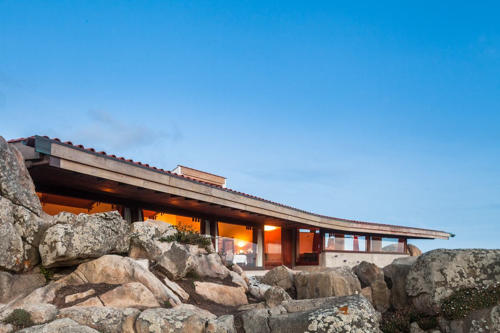
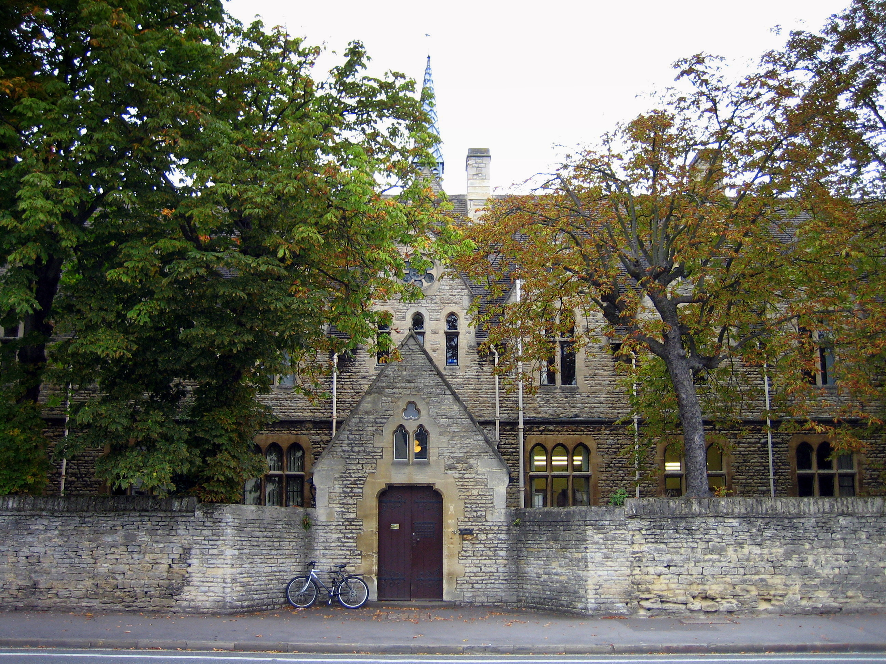
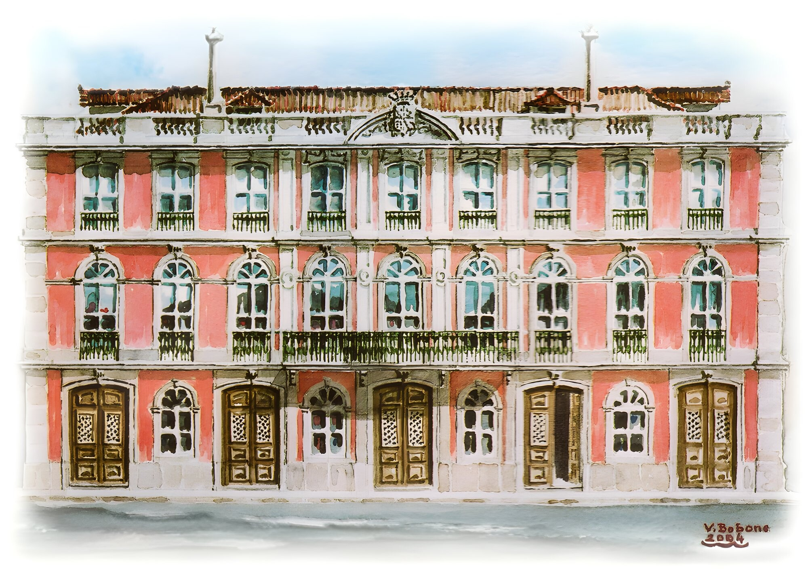

Oxford University Society Portugal
Connecting Oxford alumni across Portugal to share ideas and build community.
Become a Member
Connecting Oxford alumni across Portugal to share ideas and build community.
Become a MemberWelcome to the Oxford Society of Portugal - the official Alumni network of the University of Oxford in Portugal, bringing together graduates from across generations and disciplines, united by our shared connection to Oxford and a desire to stay intellectually engaged, socially connected, and culturally enriched.
The Society is run by an executive committee made up of volunteer members who are passionate about building an active alumni community in Portugal.
The committee’s goal is to foster meaningful connections through events, networking opportunities, and collaborations that reflect both the academic richness of Oxford and the unique character of Portugal.
Rooted in tradition, yet forward-looking in outlook, the Oxford Society of Portugal invites all alumni to remain part of an evolving Oxford story - right here in Portugal.
If you would like to join the Society (no membership fee applies) and be included in our mailing list, please get in touch with us using the form below.
One of our plans is to start a regular informal monthly evening gathering in Lisbon, joining up with alumni groups from other leading UK, European and US universities.
We have launched official OUS Portugal groups on Instagram, LinkedIn and Facebook.
We look forward to meeting you soon.
Floreat Oxonia!

Venue: Casa de Chá da Boa Nova
Time: 7.30 PM
Address: Avenida da Liberdade 1681, 4450-718 Leça da Palmeira
Date: Saturday 19th September, 2026

Venue: Institute for Political Studies, Universidade Católica
Time: 6.30 – 8.00 PM
Address: Library Building, 2nd Floor, Palma de Cima, 1649-023 Lisboa
Date: Saturday 20th June, 2026
Entrance: 5 EUR
Registration: Please contact João Espada, St. Antony's Liaison Officer in Portugal, on email espadajc@gmail.com for further details.

Venue: Grémio Literário
Time: 7:00 PM Onwards
Address: Rua Ivens Nº37, 1200-226, Lisboa
Date: Friday 30th January, 2026
Venue: Maus Hábitos
Time: 7:00 PM
Address: Rua de Passos Manuel 178 4º Piso, Porto
Date: Friday 9th January, 2026
Venue: Pavilhão Chinês
Address: R. Dom Pedro V 89, Lisboa
Time: 7:00 PM
Date: Friday 12th December, 2025
Venue: Altis Belém
Date: Friday 9th May, 2025
Venue: Altis Belém
Date: Friday 15th November, 2024
St Antony’s College
St John’s College
SBS | Pembroke College
St Cross College
By submitting your request you consent to our providing the details you give here to the Alumni Network in Oxford for verification.
Oxford University Society of Portugal is an autonomous group for alumni of the University living in Portugal and operates independently of the University. Responsibility for this website and any and all activities associated with it are the full responsibility of the group and its organising committee. This website is not maintained, monitored, or in any way under the control of the University of Oxford.